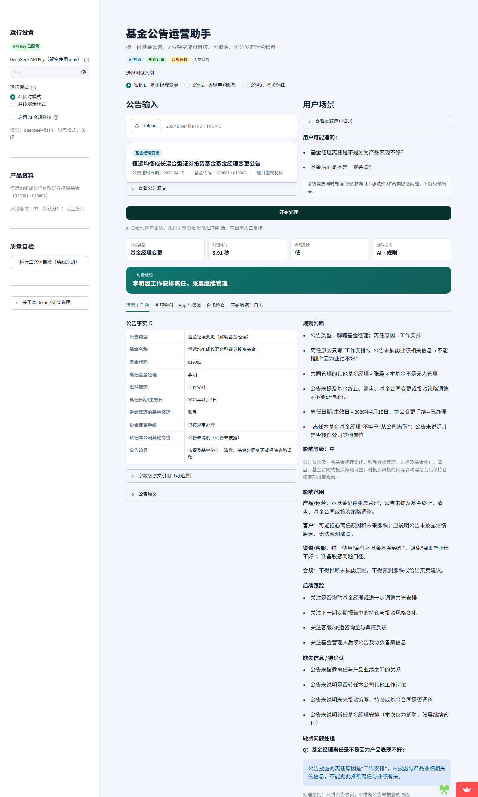

基金公告运营助手：设计思路文档
本文档配套一个可运行的 Streamlit Demo。题目材料中的产品、人物、数据均为虚构，仅用于演示。
0. 一页纸摘要
产品定位：把一份基金公告，在 3 分钟内变成可审核、可追溯、可分发的运营物料。
解决的问题：公募基金公告数量多、类型差异大，运营/客服需要逐份阅读、判断影响、准备多版本文案。人工处理慢、口径不统一、容易说错，尤其在公告集中发布时更明显。
方案：上传公告 → 自动识别类型 → 结构化抽取（带原文引用）→ 规则引擎计算影响 → 生成客服/App/渠道多角色物料 → 合规扫描 → 人工复核 → 导出留痕。
AI 的角色：大模型负责“读懂和表达”——分类、字段抽取、文案生成、敏感问题识别；规则引擎负责“算和判”——金额、日期、份额、时间截止；人负责“签字和发送”。
实际结果：三个规定案例全部跑通；离线规则自检 14/14 通过；边界测试 11/11 通过；三个案例合规检查 0 项违规；AI 实时模式单份公告约 6–8 秒（DeepSeek V4.1 Flash，默认关闭思考模式）。
Demo 形态：Streamlit 工作台，内置三个预置案例，支持自定义 PDF/TXT 上传、AI/离线双模式、人工复核与 Markdown/JSON 导出。稳定体验链接：https://fund-announcement-assistant.streamlit.app/
1. 问题定义
1.1 用户与场景
| 用户 | 关心什么 | 系统输出 |
|---|---|---|
| 运营人员 | 公告改了什么、要更新哪些页面/系统 | 事实卡、运营待办、时间轴 |
| 客服 | 用户会问什么、怎么答不违规 | 短口径、完整回复、FAQ、敏感问题处理 |
| 渠道运营 | 哪些渠道要通知、什么时间生效 | 渠道待办、限额/时间口径 |
| 合规 | 有没有预测涨跌、承诺收益、推断未披露原因 | 合规风险等级、违规项、改写建议 |
| 管理者 | 处理效率、质量、是否可追溯 | 处理日志、引用、版本记录 |
1.2 现状与痛点
- 公告类型多，关键变量不同：基金经理变更看“人”，限购看“钱 + 时间 + 口径”，分红看“份额 + 日期 + 分红方式”。
- 人工阅读和整理慢：一份公告从阅读到产出客服/App 物料，通常需要 20–30 分钟。
- 客服口径不一致：同一公告，不同人可能说出“业绩不好”“一定会跌”“马上恢复”等不合规表述。
- 合规风险高：公告通常只披露事实，不披露深层原因；模型很容易“补全”原因或做涨跌判断。
- 缺少留痕和复盘：人工整理难以追溯“这句话来自哪条公告”“数字怎么算的”。
1.3 成功指标
| 指标 | 目标 | 本 Demo 现状 |
|---|---|---|
| 单份公告处理时间 | 30 分钟 → 3 分钟 | AI 模式约 6–8 秒生成草稿 |
| 关键字段准确率 | ≥ 95% | 三个规定案例关键字段全部正确 |
| 合规红线违规 | 0 | 三个案例规则检查 0 违规 |
| 人工修改率 | < 20% | 尚未做真实用户测试 |
| 可追溯性 | 关键字段可回原文 | 每个字段保留 source_quotes |
1.4 目标与非目标
目标 - 覆盖三类高频公告：基金经理变更、大额申购限制、基金分红。 - 打通“公告 → 影响判断 → 多角色物料 → 合规复核 → 导出”的完整演示流程。 - 让评审能现场改输入、看规则变化，而不是只看三个写死的答案。
非目标 - 不做投资建议、不做交易、不做收益预测。 - 不做完整基金运营平台/CMS。 - 不接入真实注册登记机构、销售机构或公告源系统。 - 不追求覆盖全部监管公告类型（清盘、持有人大会、合同修订、费率调整等）。
2. 产品方案
2.1 产品定位
不是“公告摘要工具”，而是“公告运营工作台”。
摘要只回答“公告说了什么”；运营真正需要的是： - 这条公告对当前用户/场景意味着什么； - 客服应该怎么说，哪些话不能说； - App/渠道要改什么； - 哪些信息公告没说，不能编； - 谁复核、什么时候发布、如何留痕。
2.2 核心流程
公告 PDF / 文本
│
▼
① 类型识别（基金经理变更 / 限购 / 分红）
│
▼
② 结构化抽取（JSON Schema + 原文引用 + 缺失字段）
│
▼
③ 规则校验与计算（金额、日期、份额、15:00 截止、边界值）
│
▼
④ 多角色物料生成（客服 / App / 渠道 / 合规）
│
▼
⑤ 合规扫描（禁语、关键事实、数字一致性、风险提示）
│
▼
⑥ 人工复核 + 导出 + 留痕
2.3 输入与输出
输入 - 公告原文：上传 PDF / TXT / Markdown，或直接粘贴文本；三个规定案例可通过“载入公告 A/B/C”快捷填入。 - 产品基本资料：基金名称、代码、A/C 份额、风险等级、默认分红方式等。 - 用户场景：定投金额、持有份额、申请时间等。
输出 1. 公告事实卡（字段 + 原文引用） 2. 影响判断（规则计算 + 影响等级 + 影响范围） 3. 客服短口径 / 客服完整回复 4. App 推送标题与正文 5. 用户 FAQ 6. 运营待办清单 7. 合规风险等级、违规项与改写建议 8. 缺失信息 / 待确认事项 9. 后续跟踪清单 10. 处理日志（抽取方式、模型用量、耗时）
2.3.1 上传模块与三个规定案例的关系
试题原文是“运营人员上传公告 A/B/C”，因此本 Demo 把上传/粘贴作为主流程，而不是只做三个预置按钮。
- 页面第一入口是“上传公告 PDF/TXT”和“粘贴公告原文”。
- 三个规定案例做成“载入公告 A/B/C”快捷按钮：点击后公告原文会填入可编辑文本框，再走同一套“类型识别 → 抽取 → 规则计算 → 生成 → 合规检查”管线。
- 示例按钮只负责填入公告原文，不产生预置答案；结果均为运行期生成。
- 如果修改了示例文本，系统按自定义公告处理。
- 这样既能满足试题“上传公告”的交互要求，也方便评审快速复现三个规定案例。
2.4 人工复核与审计
- 所有输出明确标注为“运营草稿”，必须人工复核。
- 页面提供“我已人工复核”勾选，导出文件中记录复核状态。
- 合规风险为“高”时，系统自动回退到安全模板，并在页面和日志中说明。
- 导出 Markdown/JSON，保留事实卡、规则过程、合规检查、模型用量，便于复盘。
2.5 页面结构
- 左侧：运行设置、产品资料、三案例自检、如实说明。
- 主区：上传/粘贴公告、载入示例公告、公告类型确认、用户场景、开始处理。
- 结果区五个 Tab： 1. 运营工作台（事实卡 + 规则判断 + 影响范围 + 缺失信息 + 敏感问题） 2. 客服物料（短口径 + 完整回复） 3. App 与渠道（推送 + FAQ + 运营待办 + 合规提示） 4. 合规检查（风险等级 + 违规项 + 通过项 + AI 复核） 5. 原始数据与日志（抽取 JSON、规则 JSON、模型用量、合规报告）
3. AI 设计
3.1 AI / 规则 / 人的分工
| 环节 | 谁来做 | 原因 |
|---|---|---|
| 公告分类 | 关键词 + LLM | 三类公告关键词明显，LLM 兜底 |
| 字段抽取 | LLM + JSON Schema | 公告是非结构化文本，需要语义理解 |
| 金额/日期/份额计算 | 规则引擎 | 大模型算术和日期边界不可靠，必须可审计 |
| 文案生成 | LLM | 需要针对客服/App/渠道生成不同语气和长度 |
| 敏感问题识别 | LLM + 规则 | 识别“业绩不好”“一定跌”等意图 |
| 合规检查 | 规则 + 可选 LLM 复核 | 规则保证红线，LLM 补充语义判断 |
| 最终发布 | 人 | 运营/合规签批，AI 不直接对外 |
核心原则：LLM 负责理解和表达，规则负责计算和判断，人负责签字和发送。
3.2 结构化抽取
- 每类公告定义独立 JSON Schema，例如基金经理变更：
- 基金名称、代码、公告日期、变更类型、离任经理、继续管理经理、离任原因、生效日期、协会手续、转任说明。
- 抽取结果包含：
source_quotes：关键字段对应的原文句子；missing_fields：公告未披露的字段；conflicts：AI 抽取与规则抽取不一致时，记录冲突并采用规则值。- 对于短公告（几页以内），采用全文入上下文，不引入 RAG：
- 减少分块导致的上下文丢失；
- 引用更完整；
- Demo 阶段更稳定。
- 对于长公告/批量场景，后续再引入分块检索。
3.3 规则引擎
规则引擎负责所有“算”和“判”：
- 基金经理变更：离任/继续管理关系、生效日、是否无人管理、公告是否提及终止/清盘/策略调整。
- 大额申购限制：
- 单日、单账户、累计；
- 申购 + 定投 + 转换转入合并计算；
- “不含 10,000 元” → 10,000 元本身不受限，10,000.01 元触发；
- 恢复时间“另行公告” → 不编造日期。
- 分红：
- 分红金额 = 持有份额 ÷ 10 × 每 10 份分红金额；
- 默认分红方式；
- 权益登记日、除息日、现金发放日；
- 15:00 交易时间截止；
- 红利再投资份额 = 分红金额 ÷ 除息后净值；
- 分红不是额外收益，除息后净值下降。
金额使用 Decimal 计算并四舍五入到分，避免浮点误差。
3.4 文案生成
- 生成 Prompt 中同时放入：
- 公告事实；
- 规则引擎结论；
- 产品资料；
- 用户场景；
- 输出 JSON Schema。
- 明确要求：
- 不得改变数字、日期、人名；
- 区分公告事实、规则计算、运营建议；
- 不得预测涨跌、承诺收益；
- 不得推断公告未披露的原因；
- 缺失信息写“公告未说明”；
- 客服回复先共情、再事实、再下一步。
- 生成后会做一次规则校验：
- 关键数字是否出现；
- 是否出现禁语；
- 是否包含风险提示；
- 是否缺少关键事实（如“张晨继续管理”）。
- 校验不通过时，自动回退到安全模板，并在页面说明。
3.5 合规护栏
规则层检查： - 禁语/保证性表述：保证收益、稳赚、必涨、无风险、业绩不好、一定会跌、赶紧赎回等； - 关键事实：基金经理变更必须说明张晨继续管理；限购必须说明 10,000 元限额和恢复时间未公告；分红必须说明 750 元、现金分红、6 月 22 日、以登记机构为准； - 关键数字：分红不能出现 7,500 元；限购不能漏掉 10,000 元； - 风险提示：客服回复必须包含“基金有风险，投资需谨慎”或“不构成投资建议”； - 数字一致性：生成文案中的关键数字与规则结果比对。
AI 复核（可选）： - 额外调用一次模型，检查语义层面的预测、承诺、原因推断、投资建议； - 与规则检查结果合并，取更高风险等级。
3.6 为什么不用复杂 RAG / Agent
- 本题公告只有几页，全文入上下文更稳，引用更完整。
- 运营场景需要可控、可解释、可审计，完全自主 Agent 反而增加不确定性。
- 采用确定性 Workflow：每一步有明确输入输出，失败可回退，人工可介入。
- 规则引擎承担关键计算，避免“模型看起来很对、数字算错”的风险。
3.7 模型选择与思考模式
- 模型：DeepSeek V4.1 Flash（API model 名：
deepseek-flash）。 - 该模型支持思考模式。开启时单份公告会增加约 20–50 秒推理延迟，并消耗更多 completion tokens。
- 本 Demo 对“结构化抽取 + 运营文案”默认关闭思考模式（
DEEPSEEK_THINKING=disabled），实测单份公告约 6–8 秒；复杂公告或深度分析可通过.env改为enabled。 - 关闭的是显式思考链，不是换模型；金额、日期、份额等关键计算仍由规则引擎保证。
3.8 Prompt 示例（节选）
抽取 System Prompt
你是基金公告信息抽取器。你只依据公告原文抽取信息，不得补充、推测或改写。
1. 只输出一个 JSON 对象。
2. 日期统一为 YYYY-MM-DD；金额为数字（元）。
3. 公告没有写的字段填 null，并在 missing_fields 中列出。
4. 每个关键字段尽量在 source_quotes 中给出原文句子。
5. 不确定的字段不要猜。
生成 System Prompt
你是基金公司的公告运营助手，服务对象是客服、App 运营、渠道运营和合规人员。
1. 只使用给定事实和规则计算结果，不得改变数字、日期、人名。
2. 严格区分公告事实、规则计算、运营建议。
3. 不得预测基金涨跌，不得承诺收益，不得使用“一定”“必涨”“稳赚”“不会跌”等表述。
4. 不得推断公告未披露的原因，例如不得说“因为业绩不好”。
5. 公告没有说明的，写“公告未说明”，不要编造。
6. 客服回复要先共情、再讲事实、再给下一步；明确说明不构成投资建议。
4. 三类公告的差异化处理
| 维度 | 基金经理变更 | 大额申购限制 | 基金分红 |
|---|---|---|---|
| 核心变量 | 人、生效日、继续管理安排 | 金额、单日/单账户、业务范围、恢复时间 | 份额、每 10 份分红、权益登记日、分红方式 |
| 用户最关心 | 为什么走、基金会不会跌 | 我的定投会不会失败、何时恢复 | 我能拿多少钱、现金还是份额 |
| 关键陷阱 | 把“离任本基金”说成“离职”；推断业绩原因 | 10,000 元本身是否受限；定投是否合并计算 | 25,000×0.30=7,500 的错误；16:00 是否还来得及 |
| 规则判断 | 是否无人管理、是否提及终止/清盘/策略调整 | 单日累计是否超限；恢复日期是否公告 | 分红金额；15:00 截止；默认现金分红 |
| 合规红线 | 不预测涨跌、不推断原因、不给买卖建议 | 不承诺恢复日期、不引导多账户规避 | 不断言一定收到份额、不把分红说成额外收益 |
| 输出重点 | 客服敏感问题口径 + App 变更通知 | 影响判断 + 定投调整方案 + 恢复跟踪 | 分红计算 + 到账时间 + 投资者教育 |
5. 三个规定案例的实际运行结果
以下结果为 Demo 实际运行输出。AI 实时模式的措辞可能因模型生成略有差异；离线模式使用固定安全模板。截图见
docs/screenshots/。
5.1 案例1：基金经理变更
输入：公告 A；用户追问“基金经理离任是不是因为产品表现不好？基金后面是不是一定会跌？”
事实卡（实际输出）
| 字段 | 内容 |
|---|---|
| 公告类型 | 基金经理变更（解聘基金经理） |
| 基金名称 | 恒远均衡成长混合型证券投资基金 |
| 基金代码 | 019001 |
| 离任基金经理 | 李明 |
| 离任原因 | 工作安排 |
| 离任日期/生效日 | 2026年4月15日 |
| 继续管理的基金经理 | 张晨 |
| 协会变更手续 | 已按规定办理 |
| 转任本公司其他岗位 | 公告未说明（公告未披露） |
| 公告边界 | 未提及基金终止、清盘、基金合同变更或投资策略调整 |
关键判断 - 李明因“工作安排”离任本基金基金经理，自 2026-04-15 生效； - 本基金仍由张晨管理，不是无人管理； - 公告未披露离任与业绩的关系，不能推断“因为业绩不好”； - 无法预测基金未来涨跌，不能回答“一定跌/不会跌”； - “离任本基金基金经理”不等于“从公司离职”。
客服短口径（实际输出）
您好，理解您对基金经理变更的关注。根据公告，李明因工作安排于2026年4月15日离任本基金基金经理，本基金仍由张晨继续管理，协会变更手续已办理。公告未披露离任与业绩相关，也无法预测未来涨跌。基金有风险，投资需谨慎，以上不构成投资建议。
合规检查：风险等级低；4 项通过，0 项违规；通过项包括“明确说明张晨继续管理”“明确说明公告未披露业绩原因”“未把离任误写为离职”。


5.2 案例2：大额申购限制
输入：公告 B；用户每月 20,000 元定投，询问影响及恢复时间。
事实卡（实际输出）
| 字段 | 内容 |
|---|---|
| 公告类型 | 限制大额申购、定期定额投资和转换转入 |
| 限制起始日 | 2026年5月8日 |
| 单日单账户限额 | 10,000.00 元 |
| 限额口径 | 申购 + 定期定额投资 + 转换转入合并计算 |
| 边界说明 | 10,000 元本身不受限；超过 10,000 元的部分/申请才触发限制 |
| 赎回/转换转出 | 照常办理 |
| 恢复时间 | 公告未说明，另行公告 |
关键判断 - 用户每月 20,000 元，如果是一次性单日扣款，单日单账户累计超过 10,000 元，管理人有权拒绝； - 如果计划分散到多日、每日累计不超过 10,000 元，则不受影响； - 10,000 元本身可以，10,000.01 元触发限制； - 赎回、转换转出不受影响； - 恢复时间公告称“另行公告”，不能承诺具体日期。
客服短口径（实际输出）
理解您对定投计划的关心。根据公告，自2026年5月8日起，单日单账户累计申购、定投和转换转入超过10,000元的申请可能被拒绝，您的20,000元定投若单日扣款将超限。恢复时间公告未说明，需另行公告。建议您将单日金额调整至10,000元（含）以内，或咨询销售机构超限处理方式。基金有风险，投资需谨慎。
合规检查：风险等级低；包含 10,000 元限额、另行公告、赎回/转换转出不受影响等关键事实。


5.3 案例3：基金分红
输入：公告 C；用户权益登记日持有 25,000 份；6 月 17 日 16:00 申请改为红利再投资。
计算 - 每 10 份分红 0.30 元 → 每份 0.03 元； - 25,000 ÷ 10 × 0.30 = 750.00 元。
事实卡（实际输出）
| 字段 | 内容 |
|---|---|
| 公告类型 | 2026年度第一次分红 |
| 持有份额（权益登记日） | 25,000 份 |
| 分红方案 | 每10份基金份额分配 0.3 元 |
| 每份分红 | 0.03 元 |
| 本次分红金额 | 750.00 元 |
| 权益登记日 / 除息日 | 2026年6月18日 / 2026年6月18日 |
| 现金红利发放日 | 2026年6月22日 |
| 默认分红方式 | 现金分红 |
| 用户当前分红方式 | 现金分红 |
| 用户变更申请时间 | 2026-06-17 16:00 |
| 本次判定方式 | 现金分红（置信度：中） |
关键判断 - 6 月 17 日 16:00 已超过工作日交易时间（通常 15:00），申请大概率于下一交易日（6 月 18 日权益登记日）处理，晚于“权益登记日前”的要求； - 因此本次大概率仍按现金分红 750 元处理； - 最终分红方式以注册登记机构记录为准，建议用户在 App 确认； - 如果按红利再投资：份额 = 750 元 ÷ 6 月 18 日除息后净值，6 月 19 日确认，6 月 22 日起可查询； - 分红不是额外收益，除息后基金份额净值会相应下降。
客服短口径（实际输出）
理解您对本次分红到账方式的关注。根据公告，每10份分红0.30元，您持有的25,000份对应分红750.00元。您6月17日16:00提交的变更申请已超过通常15:00交易时间，本次大概率将按现金分红处理，最终以登记机构记录为准。现金红利发放日为6月22日，实际到账以销售机构为准。基金有风险，投资需谨慎，以上不构成投资建议。
合规检查：风险等级低；包含 750 元、现金分红、6 月 22 日、登记机构等关键事实；未出现 7,500 元错误。


6. 评估与验证
6.1 三个规定案例自检
运行 python tests/test_cases.py（离线规则模式），结果：
- 案例1：6/6 通过；
- 案例2：4/4 通过；
- 案例3：4/4 通过；
- 合计：14/14 通过，0 失败。
检查项包括：离任经理、继续管理经理、离任原因、生效日期、限制金额、限制起始日、用户受影响判断、恢复日期未编造、每 10 份分红、分红金额、本次分红方式、客服回复金额正确等。
6.2 边界测试
运行 python tests/test_boundaries.py，结果 11/11 通过：
| 测试 | 结果 |
|---|---|
| 20,000 元单日扣款 | 受影响 |
| 正好 10,000 元 | 不受影响 |
| 10,000.01 元 | 受影响 |
| 20,000 元分散到多日，每日 1,000 元 | 不受影响 |
| 分红变更申请 16:00 | 本次现金分红 |
| 25,000 份分红 | 750 元 |
| 当前已是红利再投资，16:00 变更失效 | 仍为红利再投资 |
| 分红变更申请 14:00 | 可改红利再投资 |
| 权益登记日当天申请 | 本次现金分红 |
| 基金经理变更后 | 不是无人管理 |
| 基金经理变更事件 | 不是基金终止 |
6.3 合规检查
- 三个规定案例的规则合规检查均为“低风险”，0 项违规；
- 检查覆盖：禁语/保证性表述、关键事实、关键数字、关键日期、风险提示；
- AI 实时生成如果触发禁语或缺失关键事实，系统会自动回退到安全模板，并在页面说明；
- 可选开启 AI 合规复核，额外检查语义层面的预测、承诺、原因推断、投资建议。
6.4 效率与成本
| 模式 | 单份公告耗时 | 说明 |
|---|---|---|
| AI 实时模式 | 约 6–8 秒 | DeepSeek V4.1 Flash 抽取 + 生成，默认关闭思考模式，实际运行观测 |
| 离线演示模式 | < 1 秒 | 规则抽取 + 安全模板，可复现 |
| 单案例 Token | 约 4k–7k | 抽取 + 生成，随公告长度变化 |
6.5 尚未验证的部分
- 未做真实运营/客服用户的可用性测试，人工修改率尚未量化；
- 未做大规模公告集评测，只有 3 个规定案例 + 10 个边界用例；
- 未接入真实公告源/登记机构/销售机构，无法验证渠道差异；
- 未覆盖扫描件 OCR、复杂表格、跨页公告等真实脏数据；
- AI 生成措辞存在波动，必须保留人工复核。
7. 与 FinClaw 参考 Skill 的关系
在设计过程中参考了 FinClaw 的基金公告解读、基金经理变更解读、分红解读、市场快讯生成、敏感措辞识别等 Skill。主要启发和取舍如下：
7.1 借鉴的部分
- 证据链优先：公告解读必须“结论对应证据”，不能只给标签。对应到本 Demo 的
source_quotes和字段级原文引用。 - 区分事实、估算/判断、待核验事项：对应本 Demo 的“公告事实卡 / 规则计算 / 缺失信息”三块，以及“公告未说明”的兜底。
- 基金经理变更的事件化分析：参考其“事件类型、影响等级、管理稳定性、风格延续性、团队支持、跟踪建议”框架，本 Demo 增加了“影响等级、影响范围、后续跟踪”。
- 对产品/客户/渠道的分角色影响：对应本 Demo 的“影响范围”和“多角色物料”。
- 敏感措辞识别的风险等级 + 改写建议：对应本 Demo 的合规检查：风险等级、违规项、修改建议、自动回退。
- 人工复核边界：参考其“需人工复核/不替代法务或正式公告口径”，本 Demo 强制人工复核勾选，并在导出文件中记录。
- 结构化输出习惯：参考其
input_summary / key_findings / data_quality / limitations结构，本 Demo 在结果中保留抽取、规则、合规、日志和缺失信息。
7.2 刻意不同的部分
- 场景不同：FinClaw 的部分 Skill 偏投研分析，会输出“偏正面/中性/偏负面”等判断；本题是运营/客服场景，我们刻意不做买卖建议，不输出“是否值得持有”的结论，只做公告事实、规则影响和对外口径。
- 计算方式不同：参考 Skill 多为 Prompt/模板驱动；本 Demo 把金额、日期、份额、15:00 截止等做成显式规则引擎，保证可审计、可复现。
- 交付形态不同：本 Demo 是可交互的工作台，不是一份 Skill 说明；评审可以改输入、看规则变化、导出物料。
- 合规策略不同：本 Demo 在生成后做规则校验，高风险自动回退安全模板，而不是只依赖 Prompt 约束。
- 范围不同：参考 Skill 覆盖更多公告类型；本 Demo 只做三类高频公告，把每一类的边界条件做深。
8. 局限与迭代路线
8.1 当前局限
- 公告类型有限：只支持基金经理变更、限购、分红；不支持清盘、持有人大会、合同修订、费率调整等。
- 规则覆盖有限：交易日判断只按工作日，未接入节假日日历；渠道截止时间差异未建模。
- 数据源未接入：没有真实公告订阅、注册登记机构、销售机构接口；“恢复公告监控”未实现。
- 解析能力有限：PDF 表格、扫描件 OCR、跨页公告可能抽取不完整。
- AI 波动：同一公告不同次生成措辞可能不同；已用规则校验和安全回退降低风险，但仍需人工复核。
- 未做真实用户评估：人工修改率、客服采纳率、一次解决率尚未量化。
- 公网链接：稳定链接已部署到 Streamlit Community Cloud；本地 Quick Tunnel 作为备用，依赖本机进程。
8.2 迭代路线
P0（当前 Demo） - 三类公告端到端； - 事实卡 + 影响判断 + 多角色物料； - 规则引擎 + 合规检查 + 人工复核 + 导出。
P1（可用性增强） - 增加清盘、持有人大会、合同修订、费率调整等公告类型； - 批量上传、公告去重、优先级排序； - 接入公告源，自动监控“恢复大额申购”等后续公告； - 渠道模板配置化，支持不同销售机构口径。
P2（运营闭环） - 影响用户圈选：按持有份额、定投计划、分红方式筛选受影响客户； - 生成渠道通知任务和客服工单； - 接入 CRM/企微/App 内容系统； - 反馈闭环：人工修改记录回流，优化 Prompt 和模板。
P3（质量与规模化） - 公告评测集与自动评分（字段准确率、规则正确率、合规违规率）； - Prompt/规则版本管理与 A/B 测试； - 多语言、多市场扩展； - 合规规则库与监管条款映射。
9. 运行与复现
9.1 环境
- Python 3.10+
- 依赖：
streamlit、openai、python-dotenv、pymupdf、pandas
pip install -r requirements.txt
9.2 配置
复制 .env.example 为 .env，填入 DeepSeek API Key；不配置也可使用离线演示模式。
DEEPSEEK_API_KEY=sk-...
DEEPSEEK_BASE_URL=https://api.deepseek.com
DEEPSEEK_MODEL=deepseek-flash
DEEPSEEK_THINKING=disabled
9.3 启动
streamlit run app.py
本地地址：http://localhost:8501
9.4 公网体验
稳定公网链接（Streamlit Community Cloud）：
https://fund-announcement-assistant.streamlit.app/
代码仓库：
https://github.com/superchild2022/fund-announcement-assistant

本地/临时备用方案：
.\start_public.ps1
脚本会启动本地 Streamlit 和 Cloudflare Quick Tunnel，并打印 https://*.trycloudflare.com 链接。保持窗口打开，链接即可访问。
当前临时备用链接（以实际运行输出为准）：
https://obtain-impacts-somerset-relay.trycloudflare.com
9.5 测试
python tests/test_cases.py
python tests/test_cases.py --llm
python tests/test_boundaries.py
测试输出留档：docs/test_results.txt（三案例自检 + 边界测试）。
9.6 截图
docs/screenshots/02_case1_workbench.pngdocs/screenshots/03_case1_cs.pngdocs/screenshots/03b_case1_app.pngdocs/screenshots/04_case1_compliance.pngdocs/screenshots/05_case2_workbench.pngdocs/screenshots/05b_case2_cs.pngdocs/screenshots/06_case3_workbench.pngdocs/screenshots/07_case3_cs.pngdocs/screenshots/12_streamlit_cloud.png
10. 如实说明
- 本题三类公告为题目提供的虚构材料，Demo 未使用真实基金/客户数据。
- 三类公告的规则引擎是显式代码；AI 用于抽取和文案生成，不是所有逻辑都由模型完成。
- 三个案例的规则判断可离线复现；离线模式不调用大模型。
- 未接入真实注册登记机构、销售机构、公告源系统；“恢复时间”“除息后净值”等公告未披露信息只提示缺失，不编造。
- AI 实时生成存在措辞波动；系统会做规则校验，高风险时自动回退安全模板，但仍需人工复核。
- 稳定链接部署在 Streamlit Community Cloud；本地 Quick Tunnel 作为备用，依赖本机进程，如失效可重新运行
start_public.ps1。 - 三个规定案例的“载入公告 A/B/C”只是把公告原文填入可编辑文本框，不是预置答案；处理仍走同一套抽取、规则和生成管线。
- 输出为运营草稿，不构成投资建议，不替代合规/法务的正式审核。
附录：目录结构
app.py Streamlit 工作台
core/
config.py 配置与数据加载
llm.py DeepSeek API 封装
prompts.py 抽取/生成/合规 Prompt
extractor.py 分类、AI抽取、规则抽取、冲突合并
rules.py 三类公告规则引擎
generation.py 多角色物料生成与安全回退
compliance.py 合规检查
pipeline.py 端到端流程与自检
data/
fund_profile.json 产品基本资料
announcements.json 公告A/B/C原文
cases.json 三个测试案例与期望结果
docs/
design.md 本文档（Markdown）
design.html 本文档（HTML，含截图和左侧目录导航）
test_results.txt 三案例自检 + 边界测试输出
screenshots/ 实际运行截图
tests/
test_cases.py 三个规定案例自检
test_boundaries.py 边界测试
ui_flow.py 浏览器端到端演示与截图
start_public.ps1 一键公网体验
requirements.txt